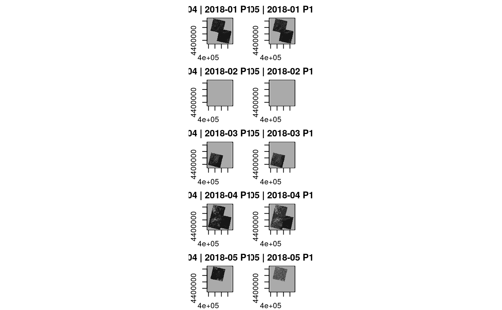

Create a proxy data cube, which joins the bands of two identically shaped data cubes. The resulting cube will have bands from both input cubes.
join_bands(X, Y)
| X | first source data cube |
|---|---|
| Y | second source data cube |
proxy data cube object
Names of bands will be taken from the input cubes. If both cubes, however, have bands with identical name, prefixes are added to all band names. Prefixes
are tried to derive from names of provided X and Y arguments (derived with substitute) or simply set to "X." and "Y.".
This function returns a proxy object, i.e., it will not start any computations besides deriving the shape of the result.
# create image collection from example Landsat data only # if not already done in other examples if (!file.exists(file.path(tempdir(), "L8.db"))) { L8_files <- list.files(system.file("L8NY18", package = "gdalcubes"), ".TIF", recursive = TRUE, full.names = TRUE) create_image_collection(L8_files, "L8_L1TP", file.path(tempdir(), "L8.db")) }#> A GDAL image collection object, referencing 19 images with 12 bands #> Images: #> name left top bottom #> 1 LC08_L1TP_013032_20180131_20180207_01_T1 -74.67898 41.39099 39.25027 #> 2 LC08_L1TP_013032_20180405_20180417_01_T1 -74.70333 41.39106 39.25080 #> 3 LC08_L1TP_013032_20180421_20180502_01_T1 -74.70681 41.39107 39.25098 #> 4 LC08_L1TP_013032_20180710_20180717_01_T1 -74.66854 41.39096 39.24991 #> 5 LC08_L1TP_013032_20180827_20180911_01_T1 -74.67202 41.39097 39.25000 #> 6 LC08_L1TP_013032_20181030_20181115_01_T1 -74.69637 41.39104 39.25062 #> right datetime #> 1 -71.92546 2018-01-31T00:00:00 #> 2 -71.94695 2018-04-05T00:00:00 #> 3 -71.95411 2018-04-21T00:00:00 #> 4 -71.91114 2018-07-10T00:00:00 #> 5 -71.91472 2018-08-27T00:00:00 #> 6 -71.93979 2018-10-30T00:00:00 #> srs #> 1 +proj=utm +zone=18 +datum=WGS84 +units=m +no_defs #> 2 +proj=utm +zone=18 +datum=WGS84 +units=m +no_defs #> 3 +proj=utm +zone=18 +datum=WGS84 +units=m +no_defs #> 4 +proj=utm +zone=18 +datum=WGS84 +units=m +no_defs #> 5 +proj=utm +zone=18 +datum=WGS84 +units=m +no_defs #> 6 +proj=utm +zone=18 +datum=WGS84 +units=m +no_defs #> [ omitted 13 images ] #> #> Bands: #> name offset scale unit nodata image_count #> 1 B01 0 1 0.000000 19 #> 2 B02 0 1 0.000000 19 #> 3 B03 0 1 0.000000 19 #> 4 B04 0 1 0.000000 19 #> 5 B05 0 1 0.000000 19 #> 6 B06 0 1 0.000000 19 #> 7 B07 0 1 0.000000 19 #> 8 B08 0 1 0.000000 19 #> 9 B09 0 1 0.000000 19 #> 10 B10 0 1 0.000000 19 #> 11 B11 0 1 0.000000 19 #> 12 BQA 0 1 19 #>L8.col = image_collection(file.path(tempdir(), "L8.db")) v = cube_view(extent=list(left=388941.2, right=766552.4, bottom=4345299, top=4744931, t0="2018-01", t1="2018-05"), srs="EPSG:32618", nx = 497, ny=526, dt="P1M") L8.cube = raster_cube(L8.col, v) L8.cube.b04 = select_bands(raster_cube(L8.col, v), c("B04")) L8.cube.b05 = select_bands(raster_cube(L8.col, v), c("B05")) join_bands(L8.cube.b04,L8.cube.b05)#> A GDAL data cube proxy object #> #> Dimensions: #> low high count pixel_size chunk_size #> t 2018-01 2018-05 5 P1M 16 #> y 4345299 4744931 526 759.756653992395 256 #> x 388941.2 766552.4 497 759.781086519115 256 #> #> Bands: #> name offset scale nodata unit #> 1 B04 0 1 NaN #> 2 B05 0 1 NaN #># }